LUAD · RNA-seq: contagens brutas (GDC)
STAR - Counts (GENCODE v36) · gerado em 22/10/2026 01:01
43,2 Mtamanho mediano
0,66dispersão mediana α
17.616genes
518amostras tumorais
59amostras normais
0,0%valores faltantes
Fonte: API do GDC (STAR - Counts)
Principais resultados
- Bibliotecas de 18,0 a 103,7 milhões de leituras (mediana 43,2). 44.392 de 60.660 features têm leitura em pelo menos 10% das amostras.
- A variância cresce bem acima da média: a dispersão mediana da binomial negativa é α=0.66 (para features com média > 10). Isso descarta um modelo Poisson e indica binomial negativa (ou Poisson-lognormal) na verossimilhança.
- A fração de zeros é compatível com a binomial negativa (diferença mediana -3,3%); inflação de zeros não parece necessária.
- Em média 10,0% das leituras de cada amostra vão para as 20 features mais abundantes (SFTPB, MT-CO1, MT-ND4).
- Genes codificadores de proteína recebem 96,5% das leituras (mediana).
- 17.616 genes medidos em 577 amostras (518 tumorais e 59 normais); 0,0% dos valores estão faltando.
- Os dois primeiros componentes principais explicam 17,2% e 6,4% da variância das features mais variáveis.
- Correlação mediana entre amostras: 0,58.
- Tumor x normal: 14725 genes diferentes com FDR < 5% (8940 maiores no tumor, 5785 maiores no normal; 58 pacientes têm o par tumor-normal).
- Mais aumentados no tumor: ENSG00000143590.14, ENSG00000204949.9, ENSG00000186871.7, ENSG00000248243.1, ENSG00000243479.3, ENSG00000262772.2, ENSG00000162062.15, ENSG00000186193.9.
- Mais reduzidos no tumor: ENSG00000168484.12, ENSG00000066405.13, ENSG00000171885.18, ENSG00000204305.14, ENSG00000099994.11, ENSG00000112782.19, ENSG00000150977.10, ENSG00000105974.13.
- Associações clínicas com p < 0,05 nos componentes principais: PC1 com estádio (p=0.00033); PC3 com estádio (p=0.025); PC1 com sexo (p=4.7e-05); PC2 com sexo (p=0.0011); PC1 com idade (p=3.9e-05); PC1 com sobrevida (p=2.6e-05).
Biblioteca
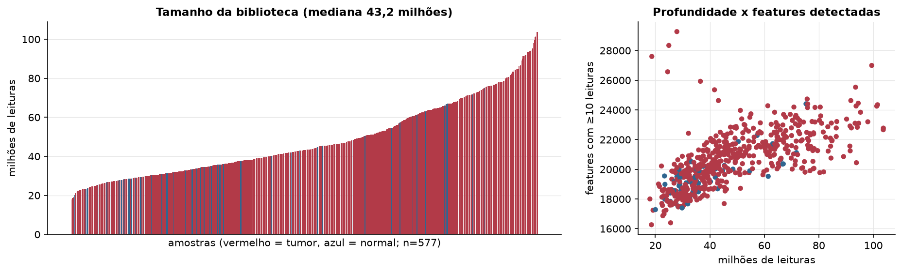
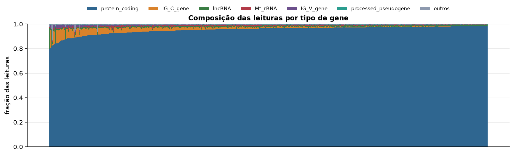
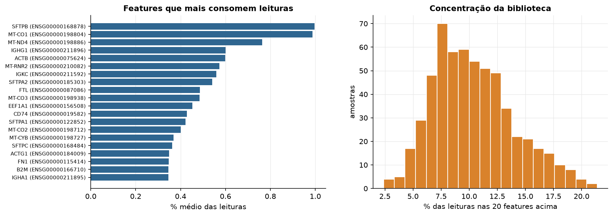
Sobredispersão e zeros
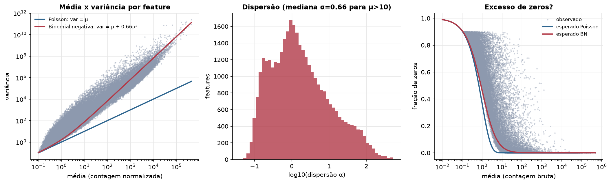
Exploração em log2(CPM+1)
Features com CPM ≥ 1 em pelo menos 20% das amostras (17.616 features).
Distribuição dos valores
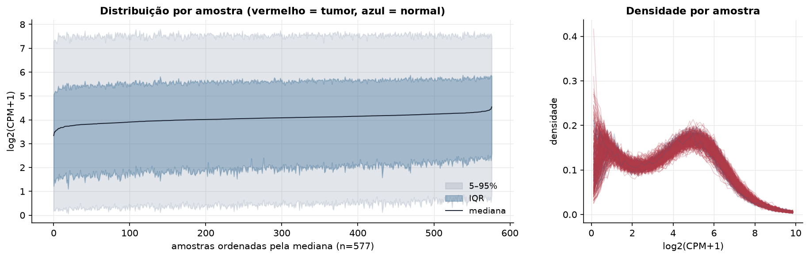
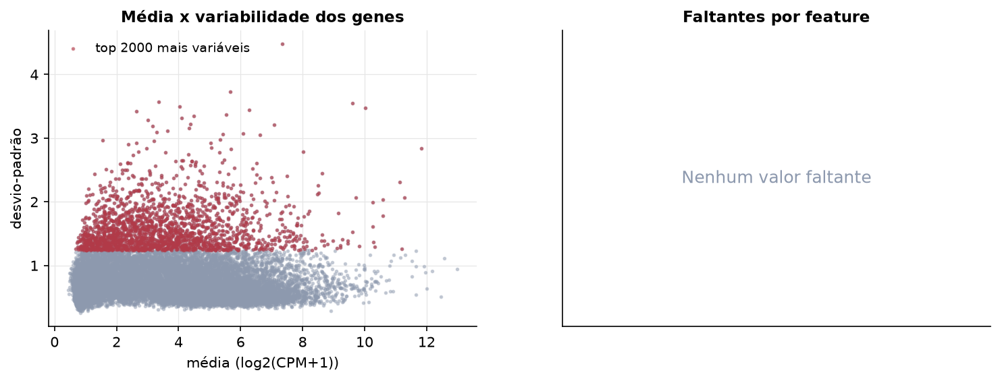
Estrutura das amostras
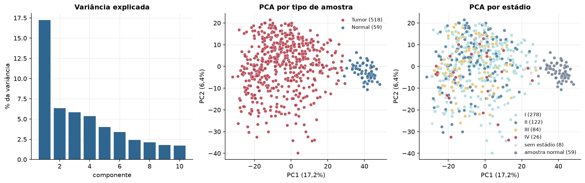
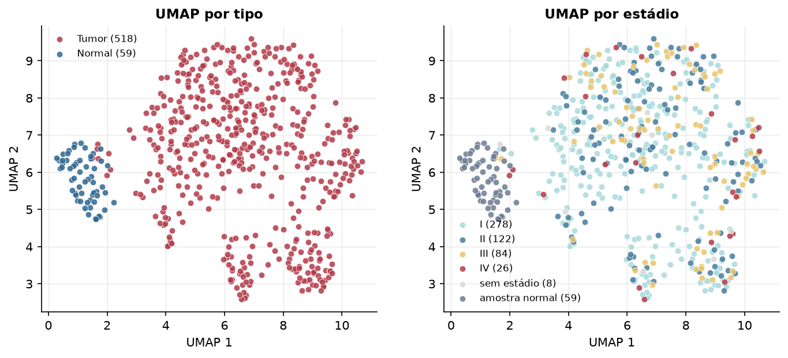
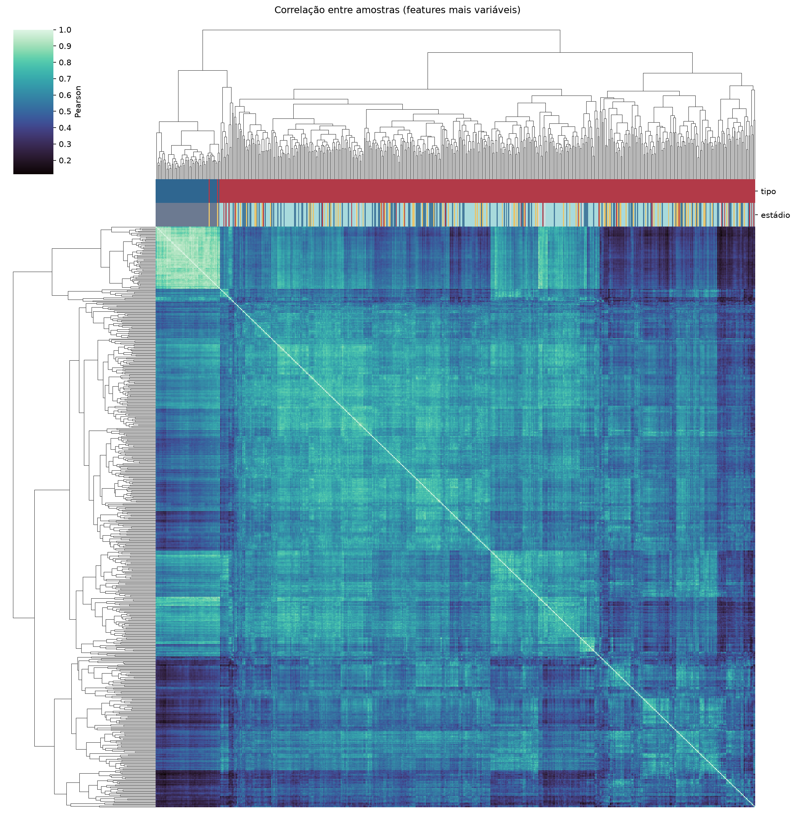
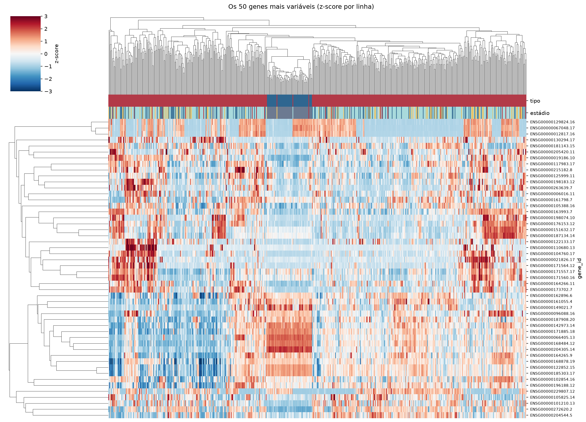
Tumor x normal
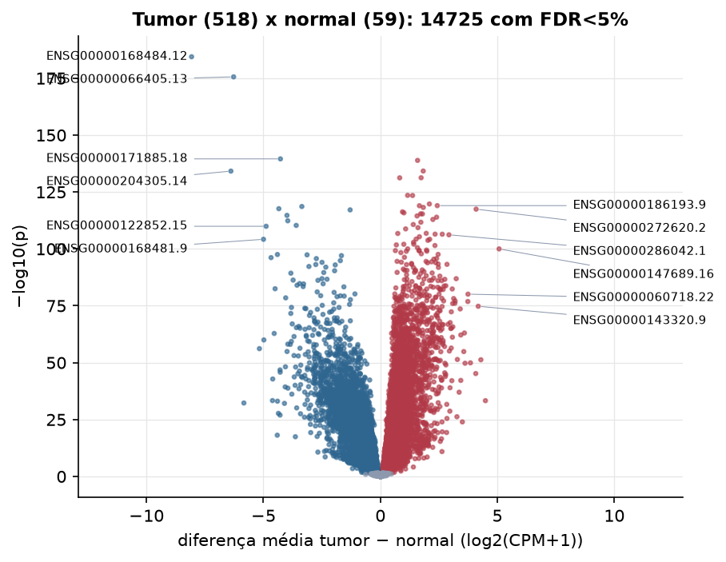
Features mais diferentes entre tumor e normal
| gene_id | diferenca_tumor_menos_normal | t | p | fdr |
|---|---|---|---|---|
| ENSG00000168484.12 | -8.072 | -43.786 | 3.77e-185 | 6.64e-181 |
| ENSG00000066405.13 | -6.274 | -45.649 | 2.57e-176 | 2.27e-172 |
| ENSG00000171885.18 | -4.273 | -35.47 | 2.83e-140 | 1.66e-136 |
| ENSG00000143590.14 | 1.591 | 36.598 | 1.3e-139 | 5.73e-136 |
| ENSG00000204949.9 | 1.832 | 33.664 | 6.07e-135 | 1.95e-131 |
| ENSG00000204305.14 | -6.391 | -51.708 | 6.64e-135 | 1.95e-131 |
| ENSG00000186871.7 | 1.742 | 36.435 | 5.55e-132 | 1.32e-128 |
| ENSG00000248243.1 | 0.826 | 32.778 | 6.01e-132 | 1.32e-128 |
| ENSG00000243479.3 | 1.165 | 31.144 | 2.98e-124 | 5.84e-121 |
| ENSG00000262772.2 | 1.376 | 30.891 | 3.44e-124 | 6.07e-121 |
| ENSG00000162062.15 | 2.094 | 40.735 | 1.84e-120 | 2.95e-117 |
| ENSG00000186193.9 | 2.432 | 38.806 | 9.85e-120 | 1.45e-116 |
| ENSG00000251003.9 | 1.669 | 30.104 | 1.08e-119 | 1.47e-116 |
| ENSG00000099994.11 | -3.357 | -31.126 | 2.38e-119 | 3e-116 |
| ENSG00000158402.20 | 1.835 | 35.579 | 6e-119 | 7.04e-116 |
| ENSG00000112782.19 | -4.341 | -44.197 | 2.18e-118 | 2.41e-115 |
| ENSG00000272620.2 | 4.093 | 32.392 | 3.46e-118 | 3.58e-115 |
| ENSG00000150977.10 | -1.293 | -36.815 | 7.24e-118 | 7.08e-115 |
| ENSG00000255624.3 | 0.944 | 29.723 | 5.3e-117 | 4.91e-114 |
| ENSG00000258947.7 | 1.007 | 29.407 | 1.44e-116 | 1.26e-113 |
| ENSG00000109674.4 | 1.721 | 29.708 | 4.02e-116 | 3.37e-113 |
| ENSG00000197930.13 | 1.798 | 34.85 | 4.29e-116 | 3.44e-113 |
| ENSG00000105974.13 | -3.993 | -47.024 | 1.88e-115 | 1.44e-112 |
| ENSG00000203995.10 | 1.568 | 29.318 | 3.36e-115 | 2.47e-112 |
| ENSG00000227066.2 | 2.402 | 29.011 | 1.16e-114 | 8.2e-112 |
| ENSG00000174371.17 | 2.245 | 35.3 | 1.18e-113 | 8.01e-111 |
| ENSG00000134020.8 | -3.959 | -35.29 | 4.54e-113 | 2.96e-110 |
| ENSG00000125319.15 | 1.732 | 33.33 | 1.94e-112 | 1.22e-109 |
| ENSG00000130675.15 | 1.407 | 28.615 | 1.96e-111 | 1.19e-108 |
| ENSG00000133661.17 | -3.599 | -29.879 | 4.81e-111 | 2.83e-108 |
Associação com variáveis clínicas
p-valores da associação dos três primeiros componentes principais (só tumores) com estádio (Kruskal-Wallis), sexo (Mann-Whitney), idade (Spearman) e sobrevida global (Cox univariado).
| estádio (Kruskal) | sexo (Mann-Whitney) | idade (Spearman) | sobrevida OS (Cox) | |
|---|---|---|---|---|
| PC1 (12,4%) | 0.000326 | 4.73e-05 | 3.85e-05 | 2.56e-05 |
| PC2 (7,2%) | 0.405 | 0.001 | 0.137 | 0.453 |
| PC3 (6,0%) | 0.025 | 0.141 | 0.545 | 0.019 |